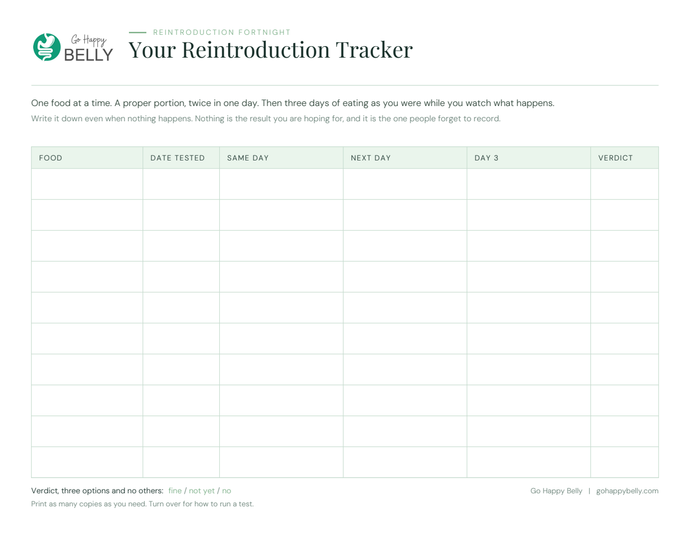

<!doctype html><html><head><meta charset="utf-8">
<style>
@font-face{font-family:PF;src:url('fonts/PlayfairDisplay-Regular.ttf');}
@font-face{font-family:PFs;src:url('fonts/PlayfairDisplay-SemiBold.ttf');}
@font-face{font-family:DM;src:url('fonts/DMSans-Regular.ttf');}
@font-face{font-family:DMm;src:url('fonts/DMSans-Medium.ttf');}
@font-face{font-family:DMl;src:url('fonts/DMSans-Light.ttf');}
*{box-sizing:border-box;margin:0;padding:0}
body{background:#F8FAF8;font-family:DM,sans-serif;}
.stage{padding:60px;display:inline-block;}

/* ---------- course UI facsimile (current structure, compliant titles) ---------- */
.ui{width:980px;height:620px;background:#fff;display:flex;overflow:hidden;}
.side{width:300px;background:#CBE6CB;flex:0 0 300px;}
.side .cap{background:#8EC18E;padding:26px 22px 22px;}
.side .cap b{font-family:PFs;font-size:27px;line-height:1.15;color:#1B2D4F;display:block;}
.side .cap span{font-family:DMm;font-size:9px;letter-spacing:.16em;color:#1B2D4F;opacity:.75;text-transform:uppercase;display:block;margin-bottom:10px;}
.side ul{list-style:none}
.side li{padding:13px 22px;border-bottom:1px solid #B7DCB7;font-family:DMm;font-size:13.5px;color:#1B2D4F;display:flex;justify-content:space-between;align-items:center;}
.side li.on{background:#B9DEB9}
.side li i{font-style:normal;opacity:.5;font-size:11px}
.main{flex:1;display:flex;flex-direction:column;}
.top{height:64px;border-bottom:1px solid #E6E6E6;display:flex;align-items:center;justify-content:space-between;padding:0 26px;}
.brand{height:40px;width:auto;display:block}
.ph .brand{height:26px}
.logo{display:flex;align-items:center;gap:9px}
.logo .dot{width:30px;height:30px;border-radius:50%;background:#1E9E5A;display:flex;align-items:center;justify-content:center;color:#fff;font-family:PFs;font-size:15px}
.logo b{font-family:PFs;font-size:17px;color:#16281f;letter-spacing:.02em}
.logo b small{display:block;font-family:PF;font-size:8.5px;font-style:italic;color:#6A8278;letter-spacing:.04em}
.pill{background:#C5E06A;color:#20371f;font-family:DMm;font-size:10px;letter-spacing:.1em;padding:8px 14px;border-radius:3px;text-transform:uppercase}
.crumb{background:#F0EBE1;padding:10px 26px;font-family:DMm;font-size:10px;letter-spacing:.14em;text-transform:uppercase;color:#7b7566}
.body{padding:30px 44px;overflow:hidden}
.body h1{font-family:PFs;font-size:30px;color:#1B2D4F;margin-bottom:16px;line-height:1.15}
.body p{font-family:DMl;font-size:14px;line-height:1.75;color:#374151;margin-bottom:13px}
.aha{font-family:PF;font-style:italic;font-size:17px;color:#1B2D4F;border-left:3px solid #7BA987;padding-left:16px;margin:18px 0}
.body h3{font-family:PFs;font-size:17px;color:#1B2D4F;margin:18px 0 9px}
.tbl{width:100%;border-collapse:collapse;font-size:11.5px;font-family:DMl}
.tbl td{border:1px solid #DDD8CE;padding:7px 9px;color:#374151}
.tbl tr:first-child td{background:#F5F1EA;font-family:DMm;color:#1B2D4F}

/* ---------- phone ---------- */
.ph{width:250px;height:510px;background:#111;border-radius:34px;padding:9px;filter:drop-shadow(0 16px 26px rgba(22,46,40,.26))}
.ph .scr{width:100%;height:100%;background:#fff;border-radius:26px;overflow:hidden;display:flex;flex-direction:column}
.ph .pt{height:42px;border-bottom:1px solid #eee;display:flex;align-items:center;padding:0 13px}
.ph .pc{background:#F0EBE1;padding:7px 13px;font-family:DMm;font-size:7.5px;letter-spacing:.12em;text-transform:uppercase;color:#7b7566}
.ph .pb{padding:15px 15px;}
.ph .pb h2{font-family:PFs;font-size:17px;color:#1B2D4F;line-height:1.2;margin-bottom:9px}
.ph .pb p{font-family:DMl;font-size:10.5px;line-height:1.7;color:#374151;margin-bottom:8px}
.ph .pb .aha2{font-family:PF;font-style:italic;font-size:11.5px;color:#1B2D4F;border-left:2px solid #7BA987;padding-left:9px;margin:10px 0}

/* ---------- frames ---------- */
.mon{background:#1a1a1a;border-radius:12px;padding:14px;filter:drop-shadow(0 20px 30px rgba(22,46,40,.24))}
.mon .bar{height:26px;display:flex;align-items:center;gap:6px;padding:0 4px 8px}
.mon .bar i{width:9px;height:9px;border-radius:50%;background:#555;display:block}
.mon .scr{border-radius:5px;overflow:hidden;background:#fff}

#A{position:relative;width:1240px;height:880px;padding:20px}
#A .mon{position:absolute;left:0;top:0;width:1030px}
#A .ph{position:absolute;right:0;bottom:0}

#B{position:relative;width:1200px;height:820px;padding:20px;perspective:1800px}
#B .mon{position:absolute;left:30px;top:30px;width:1030px;transform:rotateY(-13deg) rotateX(3deg);transform-origin:left center;filter:drop-shadow(0 24px 34px rgba(22,46,40,.26))}

#C{position:relative;width:1300px;height:900px;padding:30px}
#C .sheet{position:absolute;left:30px;bottom:48px;width:430px;background:#fff;border-radius:3px;filter:drop-shadow(0 14px 24px rgba(22,46,40,.22));transform:rotate(-7deg);overflow:hidden}
#C .sheet img{width:100%;display:block}
#C .sheet{transform:rotate(-6deg)}
#C .mon{position:absolute;right:30px;top:30px;transform:scale(.80);transform-origin:top right}
#C .ph{position:absolute;left:386px;bottom:26px;transform:rotate(2deg) scale(.86);transform-origin:bottom left}

/* D: B's perspective, with the phone and the printed tracker tucked into the
   bottom-right and overlapping the frame so it reads as one scene. The two
   front objects carry the SAME rotateY and rotateX as the monitor, and are
   scaled down, because they sit on the receding side of the vanishing point. */
#D{position:relative;width:1300px;height:800px;padding:30px;perspective:1900px}
#D .mon{position:absolute;left:20px;top:10px;width:1012px;transform:rotateY(-13deg) rotateX(3deg);transform-origin:left center;z-index:1;filter:drop-shadow(0 26px 36px rgba(22,46,40,.26))}
#D .sheet{position:absolute;right:268px;bottom:150px;width:330px;background:#fff;border-radius:3px;overflow:hidden;z-index:2;transform:rotateY(-13deg) rotateX(3deg) rotate(-6deg);transform-origin:right bottom;filter:drop-shadow(0 14px 24px rgba(22,46,40,.22))}
#D .sheet img{width:100%;display:block}
#D .ph{position:absolute;right:150px;bottom:66px;z-index:3;transform:rotateY(-13deg) rotateX(3deg) rotate(1.5deg) scale(.66);transform-origin:bottom right;filter:drop-shadow(0 16px 26px rgba(22,46,40,.30))}
</style></head><body>

<script>
const SIDE = `<div class="cap"><span>Go Happy Belly</span><b>Gut Reset Course</b></div>
<ul>
<li>Start Here <i>&#9662;</i></li>
<li>Find Your Pattern <i>&#9662;</i></li>
<li class="on">Your Pattern, In Detail <i>&#9662;</i></li>
<li>Week 1: Take The Pressure Off <i>&#9662;</i></li>
<li>Week 2: Rebuild <i>&#9662;</i></li>
<li>Week 3: Digestion Itself <i>&#9662;</i></li>
<li>Week 4: Widen Your Range <i>&#9662;</i></li>
<li>The Reintroduction Fortnight <i>&#9662;</i></li>
<li>Your Reference Shelf <i>&#9662;</i></li>
</ul>`;

const LOGO = ``;

const MAIN = `<div class="top">${LOGO}<div class="pill">Dashboard</div></div>
<div class="crumb">Your Pattern, In Detail &nbsp;&rsaquo;&nbsp; Working With The Reactive Gut</div>
<div class="body">
<h1>Working With The Reactive Gut</h1>
<p>Picture a screen door with holes in it. The door is supposed to let the air through and keep everything else out. When the mesh is damaged, things get in that were never meant to, and the house reacts.</p>
<div class="aha">The foods aren't the problem. The barrier is.</div>
<p>This is the pattern where your safe list keeps shrinking. A food you ate for years turns on you. You cut it, things settle for a fortnight, then something else joins the list.</p>
<h3>Supplements</h3>
<table class="tbl"><tr><td>Supplement</td><td>When</td><td>Dose</td></tr>
<tr><td>L-glutamine</td><td>Away from food</td><td>Set with Alina</td></tr>
<tr><td>Zinc</td><td>With a meal</td><td>Set with Alina</td></tr></table>
</div>`;

const UI = `<div class="ui"><div class="side">${SIDE}</div><div class="main">${MAIN}</div></div>`;

const PHONE = `<div class="ph"><div class="scr">
<div class="pt">${LOGO}</div>
<div class="pc">Week 2 &nbsp;&rsaquo;&nbsp; Rebuild</div>
<div class="pb">
<h2>Apple Cider Vinegar: What It Does And Who It Suits</h2>
<p>It is acidic. That is the whole mechanism, and for the right person it is genuinely useful.</p>
<div class="aha2">One tablespoon in half a glass of water, ten minutes before your two main meals.</div>
<p>Look for the cloudy kind with the sediment at the bottom, labeled as containing the mother.</p>
<p>Never drink it undiluted. It is acidic enough to damage tooth enamel.</p>
</div></div></div>`;

const MON = `<div class="mon"><div class="bar"><i></i><i></i><i></i></div><div class="scr">${UI}</div></div>`;

document.write(`
<div class="stage"><div id="A">${MON}${PHONE}</div></div><br>
<div class="stage"><div id="B">${MON}</div></div><br>
<div class="stage"><div id="D">
  ${MON}
  <div class="sheet"></div>
  ${PHONE}
</div></div><br>
<div class="stage"><div id="C">
  <div class="sheet"></div>
  ${MON}${PHONE}
</div></div>
`);
</script>
</body></html>
